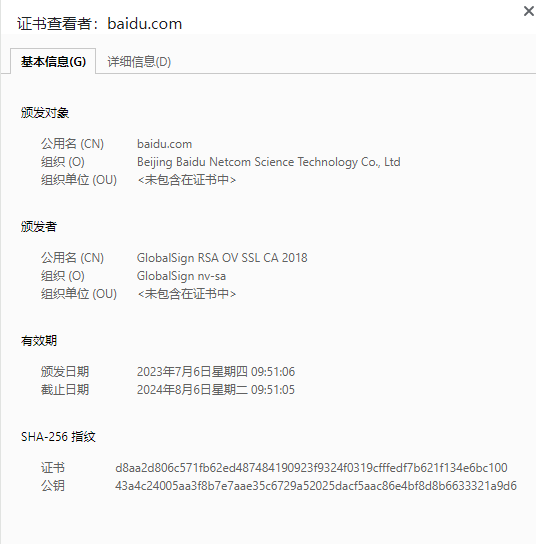
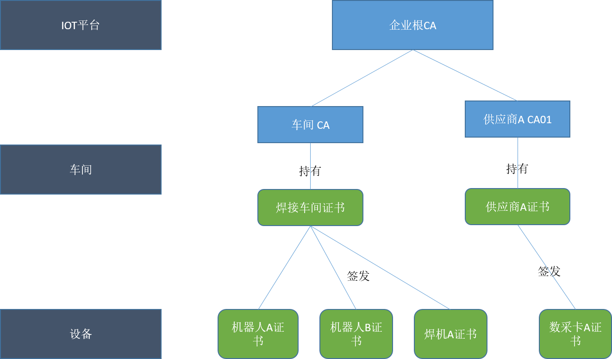

设备认证中的x.509证书使用
从信息安全角度考虑，物联网设备在接入工业网络和IOT平台的时候需要通过身份认证体系对外证明其可信度。x.509证书是使用较广泛的一种认证方式，本文展现了一个工业设备通过x.509证书接入IOT平台的认证过程。
背景知识
x.509证书
x.509 证书是由ITU(International Telecommunication Union)制定的一个安全标准，用于保障网络应用安全，最广为人知的应用是HTTPS。第一版标准发布于1988年，目前最新的版本是v9，版本的升级主要出于网络应用安全的需求变化，常见的升级方式就是增加证书字段。
x.509 证书包含了一个身份信息和一个公钥，通过电子签名将身份信息和公钥进行绑定，证书内容通常包含如下字段：
1 | |
以下是百度网站的证书内容：
常见的证书应用有电子身份、浏览器安全、电子签名和文档签名、邮件证书、SSH和代码签名等。设备认证属于电子身份的应用范畴。
CA分级
证书用于证明设备身份，所以证书的签发机构应该是一个可信的第三方机构。国内CA行业由国家根CA和第三方CA组成的多根认证中心提供认证服务，互联网应用使用的证书一般由第三方CA颁发，如上海CA。在企业内部的IOT应用中，通常是由IOT平台担任企业根CA的角色，再通过分配的中间CA协助企业根CA进行证书的签发和生命周期管理。
如上图所示，企业内部按照证书用途划分形成了企业根CA、车间CA和供应商CA的多根认证结构。
设备认证
设备认证包含两个过程：
证书生成
证书生成发生在设备接入前置阶段，通过在IOT平台注册设备信息后可以为设备生成证书，用于设备连接的身份验证。
证书验证
证书验证过程发生在设备和平台建立连接的阶段，通过证书证明身份可信后才能连接成功。
下面以某供应商A需要接入一台数采设备E01为例，具体描述设备认证过程。设备认证的前置条件是企业内部CA分级已经构建完成，并且供应商A成功作为中间CA接入。
证书生成
生成密钥对
1
openssl genrsa -out e01.key 2048为证书创建CSR（证书签名请求）
1
openssl req -new -key e01.key -out e01.csr证书签名请求是提交给CA的申请材料，里面包含证书内容，所以在创建证书签名请求的时候需要用户输入申请者信息，按照提示输入即可。
从CSR创建客户端证书
1
2
3
4
5
6
7openssl x509 -req \
-in e01.csr \
-CA CA01.pem \
-CAkey CA01_key.key \
-CAcreateserial \
-out e01.pem \
-days 500 -sha256基于签名请求和CA持有的证书生成客户端签名证书。其中CA和CAkey指定了用于签署设备证书的中间CA证书和对应的私钥。
至此应用于数采设备E01的证书e01.pem就成功生成了，对应的私钥为e01.key，放置于设备目录下即可进行证书验证。
证书验证
证书验证采用两段式验证，首先是IOT平台验证设备持有的证书链是否可信，其次确认建立通信的设备是证书的主体。
证书可信验证
客户端发送证书到IOT平台，平台通过如下步骤验证证书链是否可信。
- IOT平台从证书颁发者信息中得知证书是由CA01签发
- 通过CA01注册的信息获取CA01的公钥对证书中的证书签名值进行解密得到e01_hash
- 对证书中的主体信息附上CA01的信息进行散列计算得到e01_hash_temp
- 如果两者相等则证明证书确实是CA01签发
由于CA01已经通过了平台根CA认证，这就形成了 平台根CA–>CA01–>设备证书的可信证书链，设备证书有效。
实体可信验证
平台需要验证连接请求是从设备e01发出，即所有权确认。
- 平台生成一个随机数密钥key01并用设备证书的公钥进行加密后发送给设备
- 如果设备持有证书的私钥即可解开密文获取密钥key01，如果设备不能证明所有权则无法获取通信密钥
- 设备和平台之间连接和内容传输基于key01进行对称加密通信
通过实体可信验证的筛选，只有设备证书的持有主体才可以和平台建立连接进行通信。
总结展望
企业对于工业互联网的安全问题越来越重视，而接入工业互联网的设备安全必然会成为重要的考量。作为工业互联网设备服务供应商只有充分考虑企业的安全架构，并未雨绸缪的做好应对措施才可以在激烈的竞争中脱颖而出。本文从设备认证的角度出发，结合云服务商的最佳实践，展示了公司对于设备接入阶段安全认证的全局认知，为设备接入认证的技术实现打下了良好的基础。
我们可以看出x.509证书总体是基于公私钥体系，所以设备的私钥保护显得异常重要，对于设备供应商来说如果能通过设备内置安全模块来对私钥进行保护，这对于安全设备无疑是一个很大的加分项，这也可以作为技术实现的一个方向。